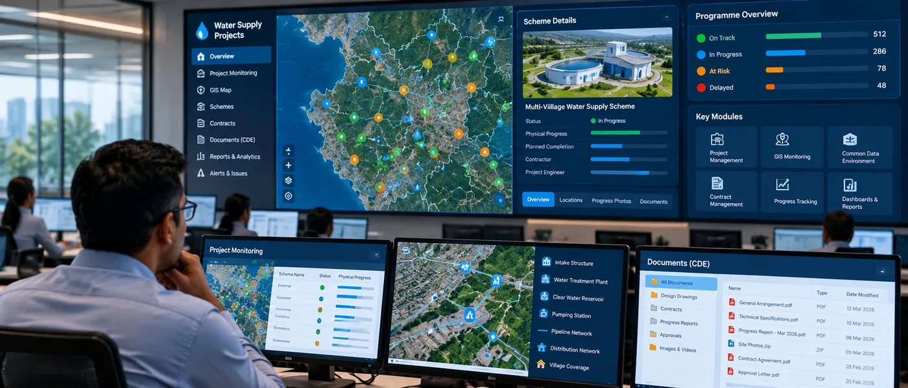

The Assignment
Managing 924 multi-village water supply schemes across multiple regions required a centralized digital environment for project monitoring, information management and coordination.
The assignment involved implementing a Digital Project Management System (DPMS) to provide centralized visibility of project progress, integrate information from multiple systems and standardize project-management workflows across the programme.
Our Approach
CS TECH Ai implemented a GIS-enabled Digital Project Management System integrating project information, monitoring applications and collaboration workflows within a common digital environment.
The engagement included:
- Implementation of a Digital Project Management System (DPMS)
- Development of a GIS application for progress monitoring
- Establishment of a Common Data Environment (CDE)
- Actual progress monitoring across project locations
- Setup of a centralized Control Centre
- Integration with CPMS and e-MB applications
- Data migration and publishing
- Implementation of a Helpdesk Management System
- Deployment of resources across regions for O&M and progress-monitoring support
- Centralized dashboards for project visibility and monitoring
The platform created a common environment for managing project information and tracking implementation across 924 multi-village water supply schemes.